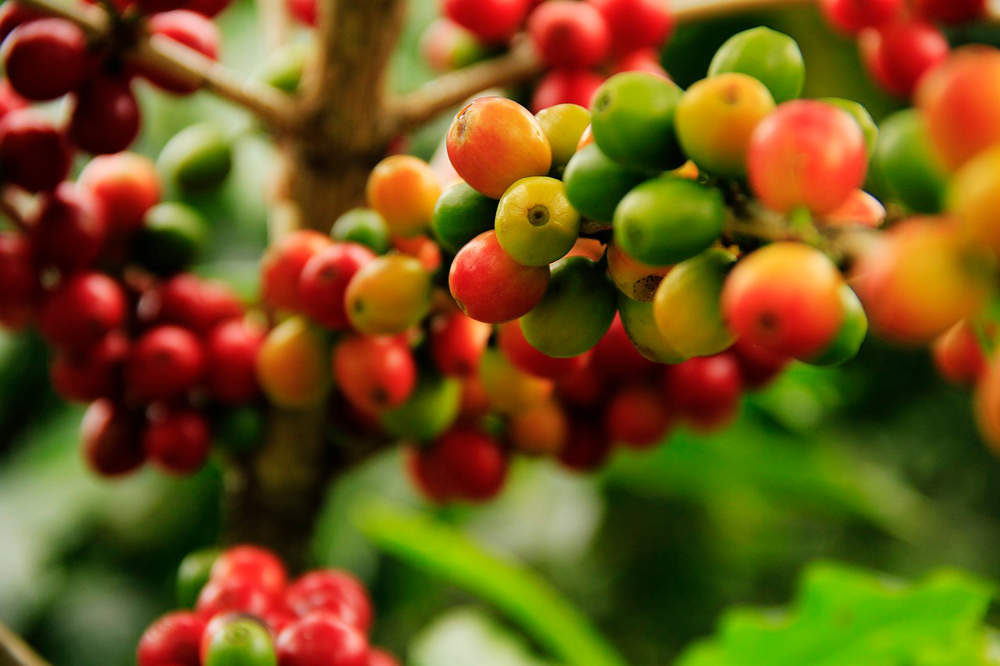

Hace 2 días
Tratamiento efectivo para la Broca
sin químicos agresivos
He probado este método en mi finca
durante los últimos 3 años con
excelentes resultados.
Se trata de una mezcla fermentada
de ingredientes naturales que ayuda
a controlar la plaga sin afectar
la calidad del cultivo.
👍 42
💬 18
🔄 Compartir
Hace 1 semana
Guía de Maduración Óptima

Identificar el color exacto es
crucial para la calidad en taza.
Comparto fotos de mi última
cosecha para ayudar a quienes
están comenzando.
👍 156
💬 45
🔄 Compartir
Hace 2 semanas
¿Alguien ha notado cambios
en el régimen de lluvias
en el sur del Huila?
Mis sensores están registrando
un 15% menos de humedad que el
año pasado por estas fechas.
Me interesa conocer si otros
productores están observando
el mismo comportamiento.
👍 21
💬 62
🔄 Compartir